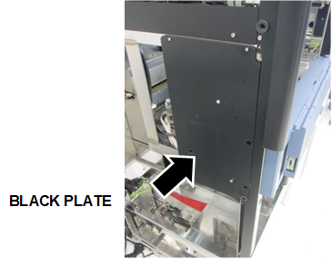
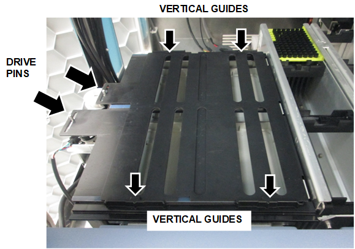
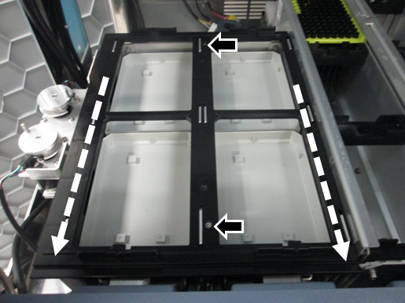
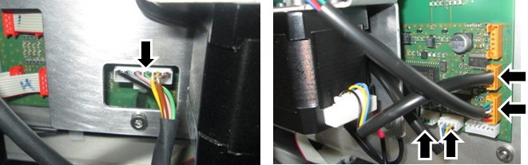
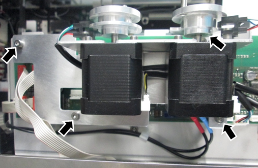
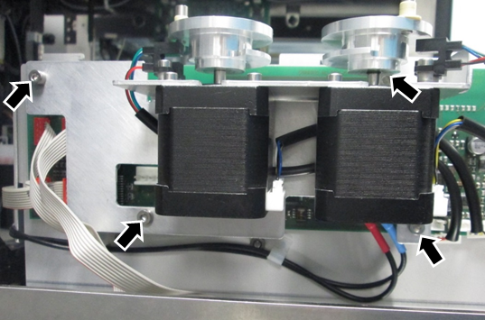
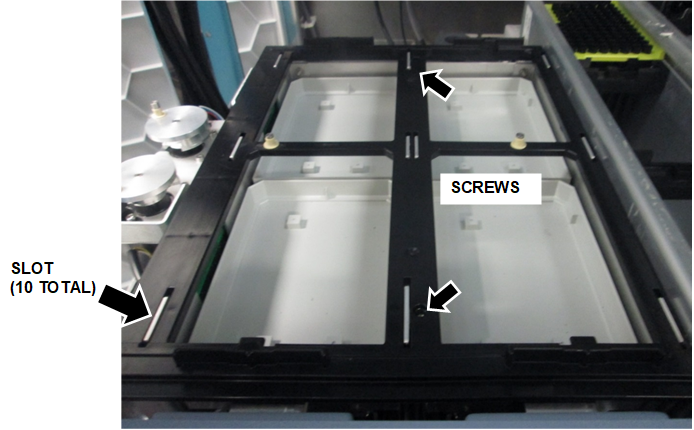
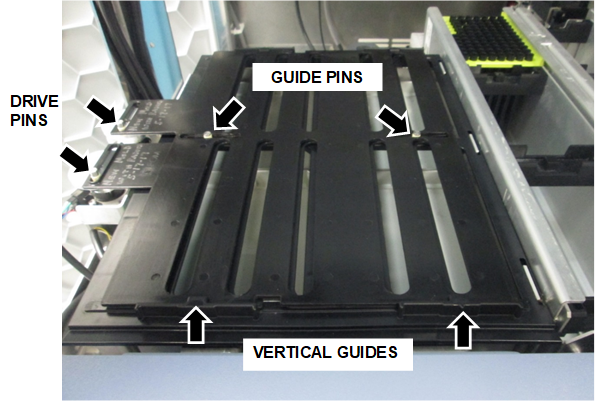

Tube Tray Drawer Shutter and Motor Upgrade Procedure
Purpose
Instructions to upgrade the Eccentric Drive Motor and Shutters on the Tube Tray Drawer.
Perform this procedure to upgrade the Eccentric Drive Motor and Shutters when installing any spare module.
This procedure can also be used as an optional upgrade to any system in the field that still has the old style shutters and motor.
Parts and Materials Required
- 4 Tray of Cap and Vials
- Panther Tool Kit
- Proper PPE
- Shutter and Motor Upgrade Kit
Time Required
- 1 hour
Procedure
- Put on proper PPE.
- Power down the Panther System.
- Power down the PC.
- Open the left door of the Fusion module.
 Using a 2.5 mm and 3 mm hex key, remove the back plate to access the Tube Tray Drawer
Using a 2.5 mm and 3 mm hex key, remove the back plate to access the Tube Tray Drawer

- Remove the existing shutters.
- Lift each tab just far enough to free each Shutter from the Eccentric Drive Pins.
- Slide the shutters towards the motors to clear the Vertical Guides and remove the shutters.

NOTE—If 2 center Guide Pins are present, pull up on the middle of the shutters to clear the pins, then slide the shutters to remove. 
- Remove (and save) the 2 screws that secure the old shutter frame.
- Slide the shutter frame towards the front of the drawer to release, remove and discard the frame.

- Disconnect the CAN cable and all 4 drive cable connectors from the PCB.(If necessary, take a picture or note the location of the cables to re-connect the new motor.)

- Remove the 4 screws that secure the old motor, remove, and discard.

- Install the new motor reusing the 4 screws.

- Reconnect the CAN cable and all 4 connectors.
- Install the new shutter frame.
- Set the frame on the drawer.
Each slot in the frame (10 total) should sit flush over the tabs, then slide back into place. - While pushing the frame forward, re-install the 2 screws to secure the frame.
Do not adjust the frame until it aligns with the holes, the frame must be against the tabs.Note—If only one screw can be installed while against the tabs, it is acceptable to only install one screw. 
- Install new shutters.
- Hold both shutters together above the drawer, with both tabs on the left. The top shutter should have its tab over the rear motor, and the bottom shutter should have its tab over the front motor.
- Line up the notches with the Vertical Guides on the front and back of the drawer, and slide both shutters under the guides from the left to the right.
Note—While holding down the edges of the shutter, slightly raise the middle of the shutter to clear the center Guide Pins. - Place the Eccentric Drive Pins into the corresponding eccentric drive pin slot of each shutter.
- Visually confirm:
- Both Eccentric Drive Pins are in the Eccentric Drive Pin slots.
- The bottom shutter is connected to the motor closest to the front of the system.
- Both center Guide Pins are in the guide pin slots.
- Both shutters are under all 4 Vertical Guides of the drawer.

- Replace the black access plate.
- Close the door.
- Replace the corner cover.
- Proceed to Verification.
Verification
Verify Parameter 690
- Power on the Panther System.
- Power on the PC.
- Logon to FSE Shield
- Open Service Software.
- Under the 12. SC-Front > Parameter tab, from the dropdown menu select SC Cap Vial Drawer ID 0x70.
- Type 690 for the parameter.
- Select Read.:
- If the value is 0, go to Step 8.
- If the value is 1, go to Verify Parameter 590 and 591.
- In the Trace View window, select COM port STCS.
- Send the following commands and verify the returned string.
- Type 70 16 00 00 01 00
Press Enter or select Send.
Returns: 70 16 00 00 00 01 00 - Type 70 14 00 00 06 00 B2 02 01
Press Enter or select Send.
Returns: 70 14 00 00 00 06 00 B2 02 01 - Type 70 0D 00 00
Press Enter or select Send.
Returns: 70 0D 00 00 00 - Power down the Panther System.
- Power down the PC.
- Repeat Steps 1–9 to verify parameter 690 returns 1.
Verify Parameter 590 and 591
- Under the 12. SC-Front > Parameter tab, from the dropdown menu select SC Cap Vial Drawer ID 0x70.
- Under Parameter, type 590.
- Select Read and record the value.
- Under Parameter, type 591.
- Select Read and record the value.
- If the values of Parameters 590 and 591 = -10, go to Complete Verification.
If the values of Parameters 590 and 591 = -100, do the following: - In the Trace View window, change the COM port to STCS.
- Send the following commands and verify the returned string.
- Type 70 16 00 00 01 00
Press Enter or select Send.
Returns: 70 16 00 00 00 01 00 - Type 70 14 00 00 02 00 4E 02 F6 FF
Press Enter or select Send.
Returns: 70 14 00 00 00 02 00 4E 02 F6 FF - Type 70 14 00 00 02 00 4F 02 F6 FF
Press Enter or select Send.
Returns: 70 14 00 00 00 02 00 4F 02 F6 FF - Type 70 0D 00 00
Press Enter or select Send.
Returns: 70 0D 00 00 00 - Power down the Panther System.
- Power down the PC.
- Repeat Steps 1–6 to verify Parameters 590 and 591 are -10.
Complete Verification
- Complete the Reaction Tube Tray Shutter Teaching procedure referring to Reaction Tube Tray Shutter Teaching Procedure.
- Complete a Side Car Pipettor OQ Test (Cap & Vial, 224 Cycles) referring to Sidecar Pipettor OQ Test.
- Verification is complete.
 button at the top of the page to send feedback, comments, or change requests.
button at the top of the page to send feedback, comments, or change requests.